Redes de Computadores
Mario H. Adaniya
Camada de Enlace
Objetivos
Entender os conceitos da camada de enlace:
- Detecção e correção de erros
- Controle de acesso ao meio (enlace)
- Enquadramento (Delimitação de quadros)
Conceitos iniciais
NÓS (NODES)
ENLACE
Enlace: canal de comunicação que conecta nós adjacentes através de um caminho.
- Enlaces com fio
- Enlaces sem fio
- LANs
Na camada de enlace, o PDU (Protocol Data Unit) tratado chamamos de quadros (frames), que encapsula datagramas.
Permitir a comunicação eficiente e confiável entre dois computadores adjacentes em nível da camada de enlace de dados (adjacentes no sentido de estarem fisicamente conectadas)
Datagrama transferido por protocolos de enlace diferentes sobre enlaces diferentes:
ex.: Ethernet no primeiro enlace, quadro relay nos enlaces intermediários, 802.11 no último enlace.
Cada protocolo de enlace provê serviços diferentes:
ex.: pode ou não prover transferência confiável sobre o enlace
- Turista: datagrama
- Segmento de transporte: enlace de comunicação
- Modo de transporte: protocolo da camada de enlace
Serviços
Enquadramento
- Encapsula datagramas em quadros acrescentando cabeçalhos e trailer
- Implementa acesso ao canal se o meio é compartilhado
- Endereços físicos usados nos cabeçalhos dos quadros para identificar a fonte e o destino dos quadros
- Diferente do endereço IP
Entrega confiável entre dois equipamentos fisicamente conectados
Controle de fluxo
O controle de fluxo assegura que o transmissor não sobrecarregue o receptor com dados, evitando o estouro da capacidade de armazenamento do buffer.
Os dados são fragmentados em frames pequenos pois:
- Tamanho do buffer é limitado
- Erros são detectados mais cedo
- Em caso de erro, pequena quantidade de dados é retransmitida
- Evita-se que um transmissor ocupe o canal por muito tempo
Detecção de erros
Erros causados pela atenuação do sinal e por ruídos, o receptor detecta a presença de erros e avisa o transmissor para reenviar o quadro perdido.
Correção de erros
O receptor identifica e corrige o bit com erro(s) sem recorrer à retransmissão
Half-duplex e full-duplex
Com half-duplex, os nós em ambas as extremidades do enlace podem transmitir, mas não ao mesmo tempo
Pacotes e Quadros
Pacotes e Quadros
A camada de enlace de dados utiliza os serviços da camada física para enviar e receber bits pelo canal de comunicação
- Possui diversas funções, dentre as quais:
- Fornecer uma interface de serviço bem definida à camada de rede
- Lidar com erros de transmissão
- Regular o fluxo de dados de tal forma que receptores lentos não sejam atropelados por transmissores rápidos
Pacotes e Quadros
Para alcançar esses objetivos, a camada de enlace recebe os pacotes da camada de rede e os encapsula em quadros para transmissão
Cada quadro contém um cabeçalho (header) de quadro, um campo de carga útil que conterá o pacote, e um final (trailer) de quadro como mostra a figura a seguir
Pacotes e Quadros
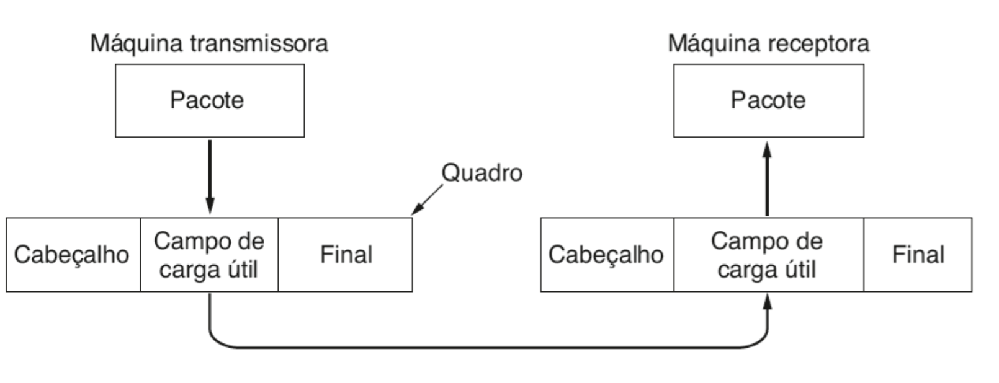Serviços oferecido à camada de redes
Serviços oferecido à camada de redes
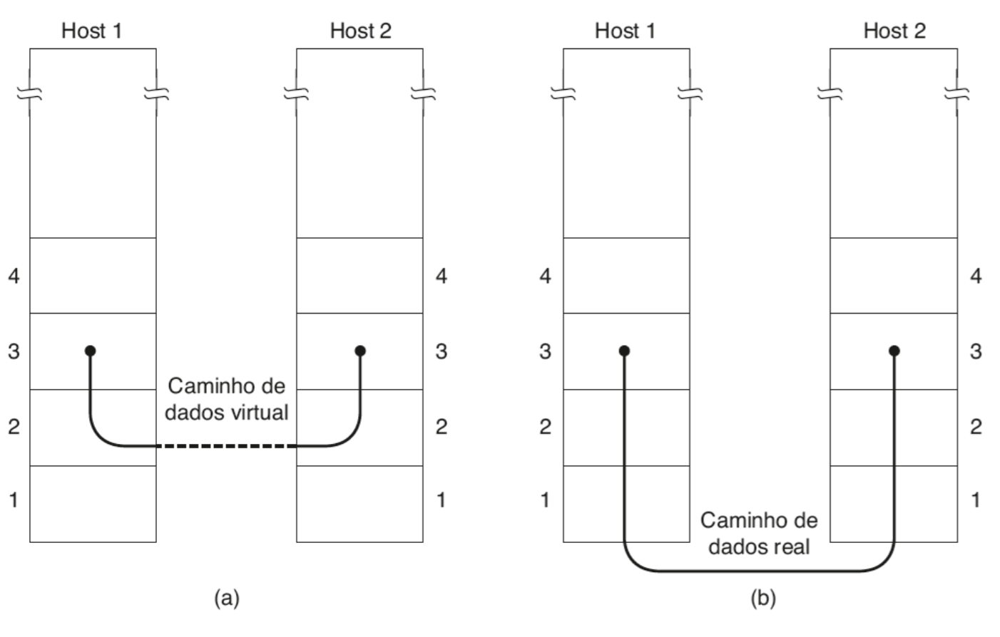Serviços oferecido à camada de redes
O principal serviço é transferir dados da camada de rede da máquina de origem para a camada de rede da máquina de destino
Na camada de rede da máquina de origem há uma entidade, chamada processo , que entrega alguns bits à camada de enlace de dados para transmissão ao destino
A tarefa da camada de enlace de dados é transmitir bits à camada de rede dessa máquina de destino, conforme mostra a parte (a) da figura. A transmissão propriamente dita é mostrada na parte (b)
Serviços oferecido à camada de redes
Contudo, é mais fácil pensamos em termos de dois processos na camada de enlace de dados, que se comunicam por intermédio de um protocolo de enlace de dados (por isso utilizaremos como referência sempre a parte (a) da figura)
A camada de enlace de dados pode ser projetada de modo a oferecer diversos serviços
Os serviços reais oferecidos podem variar de um protocolo para outro.
Serviços oferecido à camada de redes
- Três possibilidades razoáveis que consideraremos são:
- Serviço não orientado a conexões sem confirmação
- Serviço não orientado a conexões com confirmação
- Serviço orientado a conexões com confirmação.
Serviço não orientado a conexões sem confirmação
- consiste em fazer a máquina de origem enviar quadros independentes à máquina de destino, sem que essa confirme o recebimento desses quadros
- A Ethernet é um bom exemplo de uma camada de enlace de dados que oferece esta classe de serviço
- Nenhuma conexão lógica é estabelecida antes ou liberada depois do processo. Se um quadro for perdido em decorrência de ruídos na linha, não haverá nenhuma tentativa de detectar a perda ou de recuperá-lo na camada de enlace de dados
Serviço não orientado a conexões sem confirmação
- Esta classe de serviço é apropriada quando a taxa de erros é muito baixa e a recuperação fica a cargo das camadas mais altas
- Ela também é apropriada para o tráfego em tempo real, no qual, a exemplo da voz, os dados atrasados causam mais problemas que os dados recebidos com falhas
serviço não orientado a conexões com confirmação
- Quando este serviço é oferecido, ainda não há conexões lógicas sendo usadas, mas cada quadro enviado é confirmado individualmente
- Caso não tenha chegado dentro de um intervalo específico o quadro poderá ser enviado outra vez
- Esse serviço é útil em canais não confiáveis, como os sistemas sem fio. O padrão 802.11 (WiFi) é um bom exemplo desta classe de serviço
serviço não orientado a conexões com confirmação
- Oferecer recursos de confirmação a nível de camada de enlace é uma questão de otimização, nunca uma exigência
- A camada de rede sempre pode enviar um pacote e esperar que ele seja confirmado por seu par na máquina remota. Se a confirmação não chegar durante o intervalo do timer, o transmissor poderá enviar a mensagem inteira mais umas vez
serviço não orientado a conexões com confirmação
- O problema desta estratégia é que ela pode ser ineficaz, pois os enlaces normalmente tem um comprimento máximo para o quadro (imposto por hardware) e atrasos de propagação conhecidos. Contudo, a camada de redes não conhece esses parâmetros, podendo enviar um pacote grande subdividido em por exemplo, dez quadros, dos quais dois são perdidos em média, fazendo com que o tempo necessário para efetivar a transmissão do pacote com sucesso seja muito longo
- Ao invés disso, se quadros individuais forem confirmados e retransmitidos, então os erros podem ser corrigidos rapidamente
Serviço orientado a conexões
- Com ele, máquinas de origem e de destino estabelecem uma conexão antes de qualquer dado ser transferido. Cada quadro enviado pela conexão é numerado, e a camada de enlace de dados garante de fato que cada quadro será recebido
- Além disso, esse serviço garante que todos os quadros serão recebidos de uma única vez e na ordem correta. Assim, os serviços orientados a conexões fornecem aos processos da camada de rede o equivalente a um fluxo de bits confiável
- Isso é apropriado para enlaces longos, não confiáveis, como um canal de satélite ou um circuito telefônico interurbano
Serviço orientado a conexões
- Quando o serviço orientado a conexões é usado, as conexões passam por 3 fases distintas:
- Estabelecimento da comunicação, inicializando variáveis e contadores necessários para controlar os quadros
- Um ou mais quadros são transmitidos
- A conexão é desfeita, liberando-se as variáveis, buffers e outros recursos utilizados
Enquadramento
- Contagem de caracteres
- Bytes de flags
- Flags iniciais e finais
- Violação de codificação da camada física
Contagem de caracteres
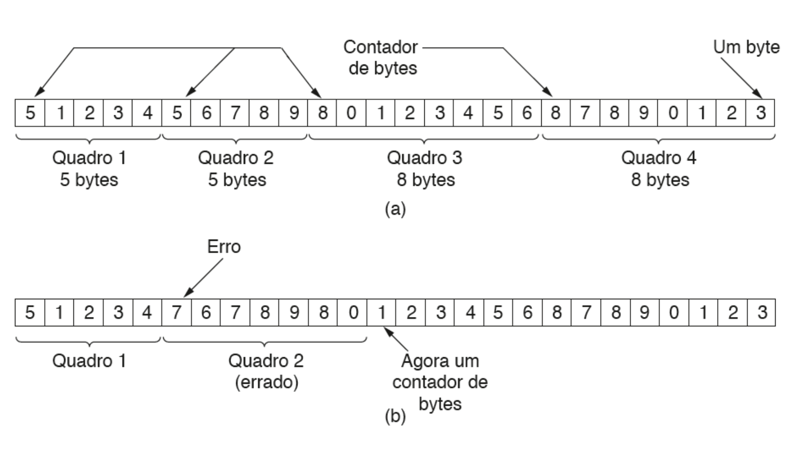Contagem de caracteres
O problema com esse algoritmo é que a contagem pode ser adulterada por um erro de transmissão, conforme visto na parte (b) da figura anterior, fazendo com que seja perdido a capacidade de localizar o início do quadro seguinte
Mesmo que o checksum esteja incorreto, de modo que o destino identifique que o quadro está defeituoso, ele ainda não terá informações suficientes para saber onde começa o quadro seguinte
Enviar um quadro de volta à origem também não ajuda, pois o destino não sabe quantos caracteres deverão ser ignorados para chegar ao início da retransmissão. Por essa razão, o método de contagem de caracteres quase não é mais usado
Bytes de flags
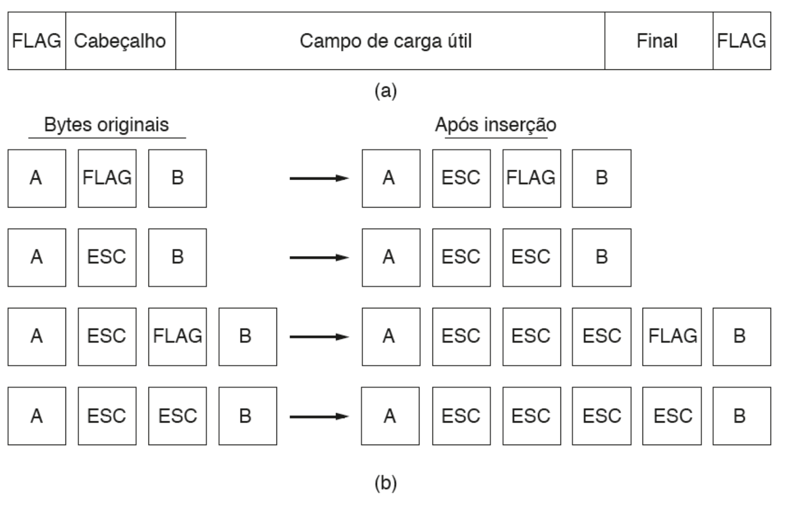Bytes de flags
Este método contorna o problema de ressincronização após um erro, fazendo cada quadro começar e terminar com bytes especiais. Normalmente o mesmo byte, chamado de byte flag, é usado como delimitador de início e fim, conforme visto na parte (a) da figura
Dois bytes de flag consecutivos indicam o fim de um quadro e o início de outro
Assim, se o receptor perder a sincronização ele poderá simplesmente procurar 2 bytes de flag para encontrar o final do quadro atual e o início do seguinte
Bytes de flags
Contudo ainda existe um problema, é bem possível que o byte de flag ocorra no meio dos dados transmitidos, interferindo no enquadramento
Nesta situação, uma solução é fazer com que o transmissor inclua um caractere de escape especial (ESC) imediatamente antes de cada byte de flag “acidental”
A camada de enlace do receptor remove os bytes de escape antes de os entregar à camada de rede. Esta técnica pe chamada de inserção de bytes (byte stuffing)
Preenchimento com bits
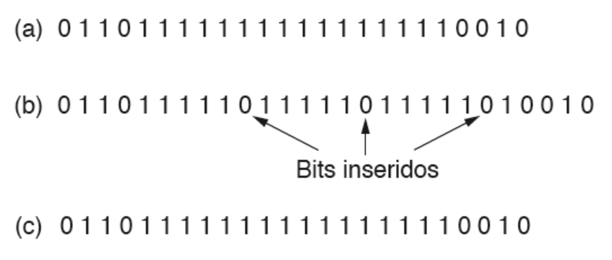Preenchimento com bits
O enquadramento também pode ser realizado a nível de bits, de modo que os quadros possam conter um número qualquer de bits, compostos por unidades de qualquer tamanho
Ele foi desenvolvido para o então muito popular protocolo de controle de enlace de dados de alto nível, ou HDLC (High-level Data Link Control).
Cada quadro começa e termina com um padrão de bits especial, 01111110, ou 0x7E em hexadecimal (na verdade um byte de flag...)
Preenchimento com bits
Sempre que encontra 5 valores 1 consecutivos nos dados, a camada de enlace no transmissor automaticamente insere um bit 0 no fluxo de bits que está sendo enviado. Esta inserção de bits é semelhante a inserção de bytes
Escape é inserido no fluxo de caracteres enviado antes de ocorrer um byte de flag nos dados. Isso também ajuda a manter uma densidade mínima de transições, o que ajuda a camada física a manter a sincronização.
O USB utiliza a inserção de bits por esse motivo
A inserção de bits e de bytes é completamente transparente para a camada de rede de ambos os computadores.
Byte de flag e Preenchimento com bits
Com a inserção de bits e de bytes, um efeito colateral é que agora o comprimento de um quadro depende do conteúdo de dados que ele carregar, por exemplo: se não houver bytes de flag no meio dos dados, 100 bytes podem ser transportados em um quadro de aproximadamente 100 bytes
Porém se os dados consistirem unicamente de bytes de flag, cada um terá um escape associado e o quadro terá aproximadamente 200 bytes de comprimento
Já com a inserção de bits, o aumento seria de aproximadamente 12,5%, pois 1 bit é inserido a cada byte
Violação de código na camada física
Na matéria de codificação na camada física, vimos que a codificação de bits como sinais normalmente inclui redundância para ajudar o receptor
Essa redundância significa que alguns sinais não ocorrerão em dados regulares. Por exemplo, no código 4B/5B, em que dados são mapeados para 5 bits de sinal a fim de garantir transições de bits suficientes, serão usados apenas 16 das 32 possibilidades de sinal.
Violação de código na camada física
Podemos então utilizar alguns sinais reservados para indicar o início e o fim de quadros. Com efeito, estamos usando “violações de código” para delimitar os quadros. A beleza desse esquema é que, por serem sinais reservados, é fácil encontrar o início e o fim dos quadros, e não é preciso inserir bits nos dados
Muitos protocolos de enlace de dados, por segurança, usam uma combinação desses métodos
Um padrão comum utilizado no 802.11 é fazer com que o quadro comece com um padrão bem definido, denominado de preâmbulo. Esse padrão pode ser muito longo (72bits é típico para redes 802.11), para permitir que o receptor se prepare para um pacote que está chegando
O preâmbulo é então seguido por um campo de comprimento (ou seja, um contador) no cabeçalho, que é usado para localizar o final do quadro
CONTROLE DE ERROS
CONTROLE DE ERROS
A forma mais comum de garantir uma entrega confiável é dar ao transmissor algum tipo de feedback sobre o que está acontecendo no outro extremo da linha de comunicação (receptor)
Geralmente o protocolo de comunicação solicita que o receptor retorne quadros de controle especiais com confirmações positivas ou negativas sobre os quadros recebidos (ou não)
CONTROLE DE ERROS
Se receber uma confirmação positiva sobre um quadro, o transmissor saberá que o quadro chegou em segurança ao destino.
Por outro lado, uma confirmação negativa significa que algo saiu errado e o quadro deve ser retransmitido
CONTROLE DE ERROS
? Um quadro desaparecer totalmente (por exemplo uma rajada de ruídos), fazendo com que o receptor não reaja de maneira alguma (sem feedback) ?
? Quadro de confirmação se perde e o emissor não saberá como prosseguir ?
CONTROLE DE ERROS
Para evitar este tipo de problema, são introduzido timers na camada de enlace de dados
Ao se enviar um quadro, o emissor inicializa um timer suficientemente longo para que o quadro chegue ao destino e dê o seu feedback. Caso isso não ocorra, o timer é desativado e o quadro enviado novamente
CONTROLE DE ERROS
? O mesmo quadro pode ser aceito pelo receptor duas ou mais vezes ?
Para evitar que isso aconteça, geralmente é preciso atribuir números de sequência aos quadros transmitidos, de modo que o receptor possa distinguir as retransmissões dos originais
CÓDIGO DE DETECÇÃO DE ERROS
CÓDIGO DE DETECÇÃO DE ERROS
- Paridade
- Checksums
- Verificação de redundância cíclica (CRCs)
Bit de Paridade
- Um único bit de paridade é acrescentado aos dados
- O bit de paridade é escolhido de modo que o número de bits 1 na palavra de código seja par ou ímpar (definido à priori)
- Por exemplo quando a “palavra” 1011010 é enviada utilizando a paridade par, um bit 0 é acrescentado ao final para torná-lo 10110100
- Com a paridade ímpar, 1011010 torna-se 10110101
Bit de Paridade
Em um código com um único bit de paridade, qualquer erro de um único bit produz uma palavra com a paridade errada. Isso significa que esse código pode detectar erros de um único bit
Podemos agora calcular um bit de paridade por linha (k), deste modo serão detectados de forma confiável k erros de bit (desde que haja somente um erro por linha)
Bit de Paridade
E erros devido à rajada de interferência?
Podemos calcular os bits de paridade em uma ordem diferente daquela de transmissão, ou seja, calcular os bits de paridade por colunas (n)
Esta técnica de codificação é chamada de entrelaçamento, que consiste de uma técnica geral para converter um código que detecta (ou corrige) erros isolados, em um código que detecta (ou corrige) erros em rajada
Bit de Paridade
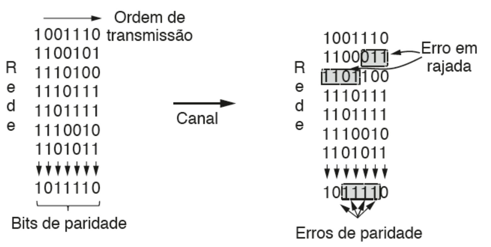Checksum
Consiste na transmissão de todas as palavras juntamente com o resultado da sua soma binária.
- Inclui o bit de transporte (vai-um/carry bit)
- Inversão do valor dos bits do checksum
Cyclic Redundancy Check
O esquema de checksum utilizado na camada de enlace é o CRC (Cyclic Redundancy Check) que consiste de um código polinomial de k termos
Esquema mais eficiente
Emissor/receptor concordam num polinômio gerador G(x), em que quanto maior for o seu grau maior será a capacidade de detecção de erros
Para calcular o CRC de um quadro com k bits, que corresponde ao polinômio M(x), o quadro deve ter mais bits do que o polinômio gerador
Cyclic Redundancy Check
Neste polinômio tanto o bit de maior ordem quanto o de menor ordem devem ser iguais a 1
Palavra inicial de k bits é representado por um polinômio de X de ordem k-1
Por exemplo: 110001 tem 6 bits e, portanto, representa um polinômio de seis termos com coeficientes 1,1,0,0,0 e 1 o que ficaria 1x5 + 1x4 + 0x3 + 0x2 + 0x1 + 1x0
Cyclic Redundancy Check
- O algoritmo para cálculo do CRC é o seguinte:
- Seja r o grau do polinômio gerador G(x). Acrescente r bits zero à extremidade de baixa ordem do quadro, de modo que ele passe a conter m + r bits e corresponda ao polinômio xrM(x)
- Divida a string de bits correspondente a xrM(x) pela string de bits correspondente a G(x) utilizando a divisão de módulo 2 (XOR)
- Subtraia o resto (que tem sempre r ou menos bits) da string de bits correspondente a xrM(x) utilizando a subtração de módulo 2 (XOR). O resultado é o quadro verificado pela soma que deverá ser transmitida.
Cyclic Redundancy Check
Do lado receptor o cálculo consiste em dividir o quadro + o CRC pelo polinômio gerador
Se o resultado for zero, não houveram erros de transmissão, veja o complemento do exemplo anterior na figura a seguir
DETECÇÃO e Correção de ERROS
Hamming
O código de Hamming é um código de detecção e correção, isto é, permite não apenas detectar o erro de um bit, mas também a localização do bit errado.
Trabalha com codificação, adicionando bits de controle em determinadas posições.
Hamming
Considere uma palavra de 8 bits, serão necessários r bits de controle. r é obtido através de: r = log28
Se fosse uma palavra de 4 bits, seriam necessários 3 bits. Uma palavra de 20 bits?
r = 6 bits.
Hamming
A inserção dos bits de controle na palavra é da esquerda para a direita, sendo colocado nas posições 20,1,2,3,4,...,r.
M = 8 bits, r = 4. Assim sendo, temos:
r1 r2 m1 r3 m2 m3 r4 m4 m5 m6 m7 m8
x1 x2 x3 x4 x5 x6 x7 x8 x9 x10 x11 x12
E para uma palavra de 4 bits, por exemplo, números hexadecimais?
M = 4 bits, r = 3. Obtemos:
r1 r2 m1 r3 m2 m3 m4
x1 x2 x3 x4 x5 x6 x7
E como é calculado cada bit de controle r?
Dado:
r1 r2 m1 r3 m2 m3 m4
x1 x2 x3 x4 x5 x6 x7
r1 = x3 ⊕ x5 ⊕ x7
r2 = x3 ⊕ x6 ⊕ x7
r3 = x5 ⊕ x6 ⊕ x7
E como é calculado cada bit de controle r?
Dado:
r1 r2 m1 r3 m2 m3 m4
x1 x2 x3 x4 x5 x6 x7
r1 = x3(m1) ⊕ x5(m2) ⊕ x7(m4)
r2 = x3(m1) ⊕ x6(m3) ⊕ x7(m4)
r3 = x5(m2) ⊕ x6(m3) ⊕ x7(m4)
E como é calculado cada bit de controle r?
Dado a mensagem m: 1011
x: __1_011
r1 r2 m1(1) r3 m2(0) m3(1) m4(1)
x1 x2 x3(1) x4 x5(0) x6(1) x7(1)
r1 = x3(1) ⊕ x5(0) ⊕ x7(1) = 0
r2 = x3(1) ⊕ x6(1) ⊕ x7(1) = 1
r3 = x5(0) ⊕ x6(1) ⊕ x7(1) = 0
x: 0110011
Hamming
| M | m | M | m | |
|---|---|---|---|---|
| 0 | 0000 | 8 | 1000 | |
| 1 | 0001 | 9 | 1001 | |
| 2 | 0010 | 10 | 1010 | |
| 3 | 0011 | 11 | 1011 | |
| 4 | 0100 | 12 | 1100 | |
| 5 | 0101 | 13 | 1101 | |
| 6 | 0110 | 14 | 1110 | |
| 7 | 0111 | 15 | 1111 |
Hamming
| M | m + r | M | m + r | |
|---|---|---|---|---|
| 0 | __0_000 | 8 | __1_000 | |
| 1 | __0_001 | 9 | __1_001 | |
| 2 | __0_010 | 10 | __1_010 | |
| 3 | __0_011 | 11 | __1_011 | |
| 4 | __0_100 | 12 | __1_100 | |
| 5 | __0_101 | 13 | __1_101 | |
| 6 | __0_110 | 14 | __1_110 | |
| 7 | __0_111 | 15 | __1_111 |
Hamming
| M | m + r | M | m + r | |
|---|---|---|---|---|
| 0 | 0000000 | 8 | 1110000 | |
| 1 | 1101001 | 9 | 0011001 | |
| 2 | 0101010 | 10 | 1011010 | |
| 3 | 1000011 | 11 | 0110011 | |
| 4 | 1001100 | 12 | 0111100 | |
| 5 | 0100101 | 13 | 1010101 | |
| 6 | 1100110 | 14 | 0010110 | |
| 7 | 0001111 | 15 | 1111111 |
Hamming
Depois de enviado a mensagem (x), se houver erro em um bit apenas, é possível detectar e corrigir o erro da seguinte forma. O receptor faz o cálculo de k1,k2, k3,..., kn
Se k1,k2, k3,..., kn = 0, não há erros. Caso contrário, o número codificado (kn,...,k3,k2,k1) pelos n bits determinam a posição.
Hamming
O cálculos de k é dado por:
k1 = x1 ⊕ x3 ⊕ x5 ⊕ x7 ⊕ x9 ⊕ ...
k2 = x2 ⊕ x3 ⊕ x6 ⊕ x7 ⊕ x8 ⊕ x9 ⊕ ...
k3 = x4 ⊕ x5 ⊕ x6 ⊕ x7 ⊕ x12 ⊕ ...
k4 = x8 ⊕ x9 ⊕ x10 ⊕ x11 ⊕ x12 ⊕ x13 ⊕ x14 ⊕ x15 ⊕...
Hamming
Suponhamos que queremos enviar: 1000011.
O receptor recebe: 1000011.
Calculamos os k's de 1000011
k1 = x1(1) ⊕ x3(0) ⊕ x5(0) ⊕ x7(1) = 0
k2 = x2(0) ⊕ x3(0) ⊕ x6(1) ⊕ x7(1) = 0
k3 = x4(0) ⊕ x5(0) ⊕ x6(1) ⊕ x7(1) = 0
Assim, k3,k2,k1 = 0
Logo, não há erro em nenhuma posição.
Hamming
Suponhamos que queremos enviar: 1101001.
Devido a erros na transmissão, enviamos: 1001001. Um erro em um bit de controle.
Calculamos os k's de 1001001
k1 = x1(1) ⊕ x3(0) ⊕ x5(0) ⊕ x7(1) = 0
k2 = x2(0) ⊕ x3(0) ⊕ x6(0) ⊕ x7(1) = 1
k3 = x4(1) ⊕ x5(0) ⊕ x6(0) ⊕ x7(1) = 0
Assim, k3k2k1 = 010
Logo, o erro está na 2a posição.
Hamming
Utilizando a mesma mensagem do exemplo anterior: 1101001. Mas o erro desta vez ocorre em um bit de mensagem. Enviamos: 1101000.
Calculamos os k's de 1101000
k1 = x1(1) ⊕ x3(0) ⊕ x5(0) ⊕ x7(0) = 1
k2 = x2(1) ⊕ x3(0) ⊕ x6(0) ⊕ x7(0) = 1
k3 = x4(1) ⊕ x5(0) ⊕ x6(0) ⊕ x7(0) = 1
Assim, k3k2k1 = 111
Logo, o erro está na 7a posição.
CONTROLE DE FLUXO
Protocolos básicos de enlace de dados
Na camada física, na camada de enlace e na camada de rede existem processos independentes que se comunicam pelo envio de mensagens.
Protocolos básicos de enlace de dados
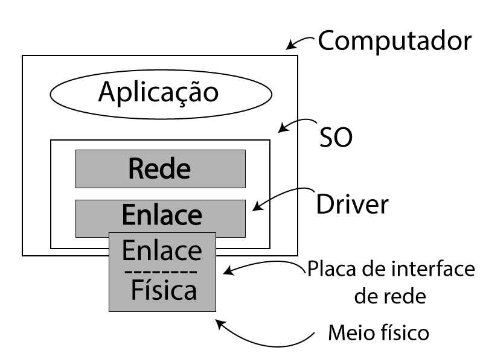Protocolos básicos de enlace de dados
No que se refere à camada de enlace, o pacote repassado a ela pela camada de rede através da interface consiste em dados puros, em que cada bit deve ser entregue à camada de rede de destino.
O fato de a camada de rede de destino interpretar parte do pacote como cabeçalho não tem nenhum interesse para a camada de enlace de dados.
Protocolos básicos de enlace de dados
Quando a camada de enlace de dados aceita um pacote, ela o encapsula em um quadro(frame), acrescentando-lhe um cabeçalho e um final de enlace de dados.
Portanto, ele consiste em:
- Informações de controle (cabeçalho)
- Checksum (no final)
Protocolo simplex sem restrições
- Não se preocupa com a possibilidade de algo sair errado.
- Os dados são transmitidos em apenas um sentido.
- As camadas de rede do transmissor estão sempre prontas.
- O espaço disponível no buffer é infinito.
- Nunca perde pacotes.
Protocolo simplex sem restrições
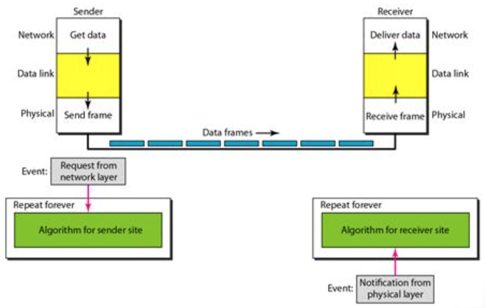Protocolo simplex sem restrições
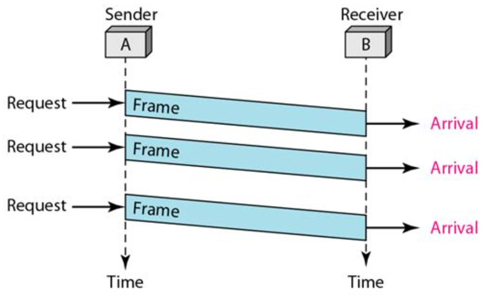Protocolo simplex sem restrições
typedef enum {frame_arrival} event_type;
#include "protocol.h“
void sender1(void) {
frame s;
packet buffer;
while (true) {
from_network_layer(&buffer);
s.info = buffer;
to_physical_layer(&s);
}
}
Protocolo simplex sem restrições
void receiver1(void) {
frame r;
event_type event;
while (true) {
Wait_for_event(&event);
from_physical_layer(&r);
to_network_layer(&r.info);
}
}
Protocolo simplex Stop-and-Wait
- Controle de fluxo
- Canal continua livre de erros
Protocolo simplex Stop-and-Wait
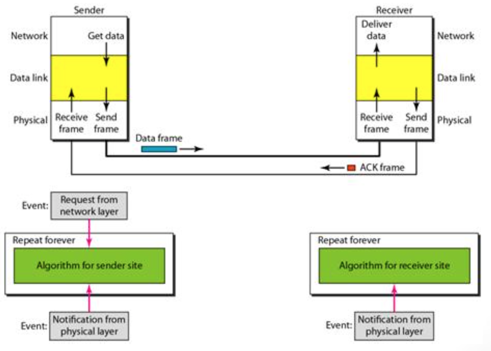Protocolo simplex Stop-and-Wait
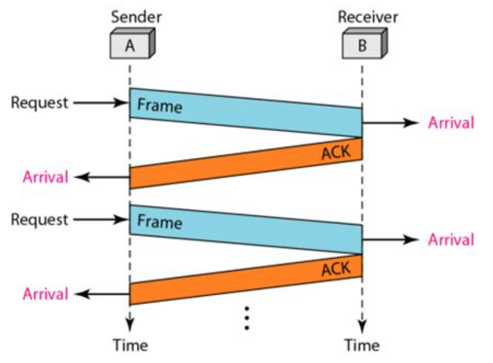Protocolo simplex Stop-and-Wait com ruídos
- Agora podem ocorrer erros
- Retransmissão de quadros errados.
- Receptor deve saber distinguir se o quadro foi duplicado, logo, utiliza numeração.
Protocolo simplex Stop-and-Wait com ruídos
- O transmissor passa para o próximo quadro apenas depois de receber uma confirmação (ACK) da última sequência enviada;
- O receptor apenas aceita quadros com a próxima sequência esperada.
- Um temporizador é usado no transmissor para não ficar em deadlock.
- Neste exemplo, apenas um bit é necessário.
Protocolo simplex Stop-and-Wait com ruídos

Protocolo simplex Stop-and-Wait com ruídos
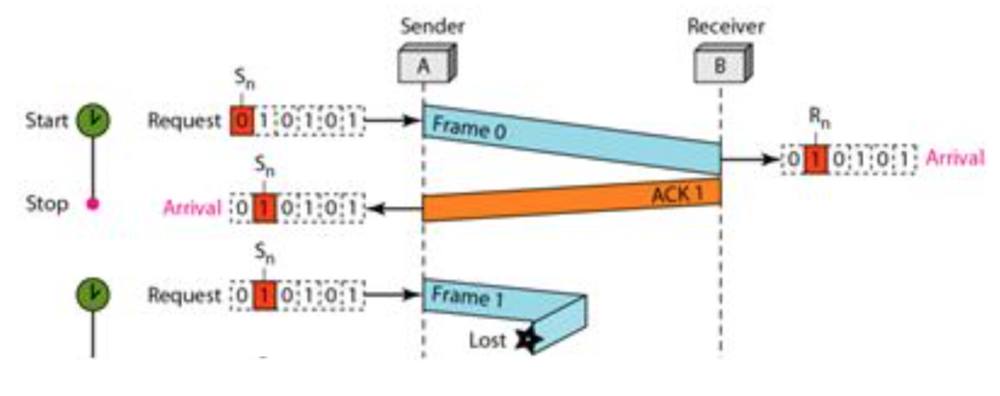Protocolo simplex Stop-and-Wait com ruídos
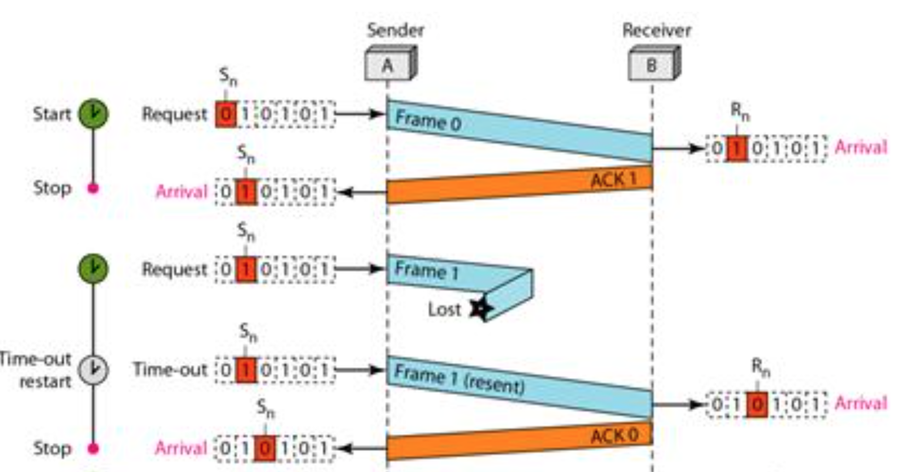Protocolo simplex Stop-and-Wait com ruídos
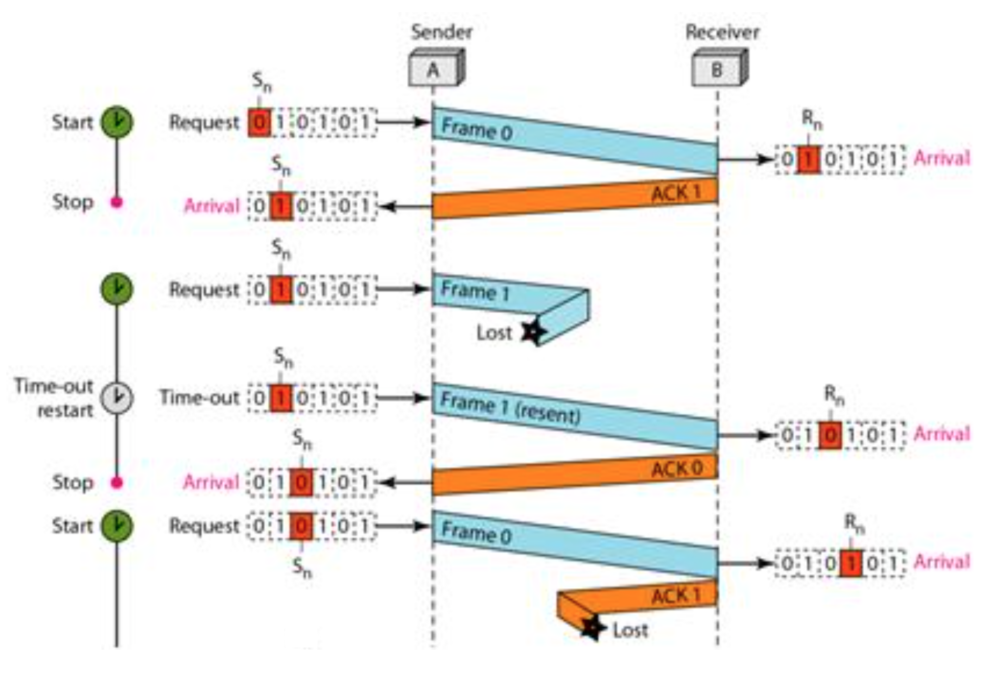Protocolo simplex Stop-and-Wait com ruídos
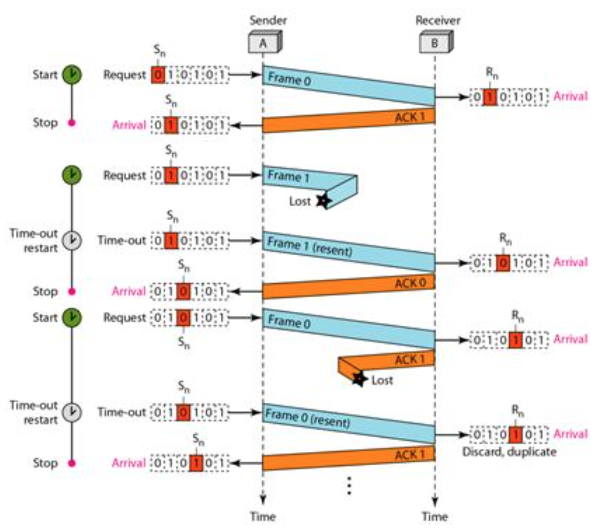Protocolo simplex Stop-and-Wait com ruídos
- Quadros de dados são transmitidos em apenas um sentido (simplex)
- O transmissor precisa esperar a confirmação do último quadro enviado para poder enviar um novo quadro, este tempo de espera pode ser significativo, deixando o canal ocioso
- Estes protocolos são bons para introduzir o assunto, mas em situações práticas são pouco usuais
Janela deslizante (Sliding Windows)
- Mecanismo de controle de fluxo e otimização
- O transmissor tem um limite de quadros para enviar segundo um parâmetro L que estabelece sua janela de transmissão
- Após o envio de L quadros sem receber nenhum ACK (acknowledge) o transmissor interrompe o envio de quadros e inicializa um temporizador para o frame perdido
Janela deslizante (Sliding Windows)
Go back N
TODO: AdJanela deslizante (Sliding Windows)
Retransmissão Seletiva
TODO: AdProtocolos
HDLC
- High-Level Data Link Control
- Padronizada pela ISO em 1979 (pai de todos os protocolos de nível 2)
- Orientado a bit
- Sequência
- CRC
Outros protocolos de diferentes arquiteturas foram definidas utilizando subconjuntos funcionais do HDLC: LLC (IEEE-802.2/Redes locais), LAP-B (Redes X.25), LAD-D (Redes ISDN), LAP-M (Modems)
PPP
- Point to Point Protocol
- IETF - RFC's 1661, 1662, 1663, ...
- Suporta múltiplos protocolos
- Detecção e correção de erros
- Negociação e atribuição dinâmica de endereços IP
- Autenticação
- Usado no acesso DIAL UP do Windows
- Configuração de enlace de dados e testes da qualidade do link
- Multiplexação do protocolo de rede
- negociações de compactação de dados
PPP
- Utilizado para ligações ponto a ponto em links seriais
- O PPP usa o HDLC como base para encapsular datagramas